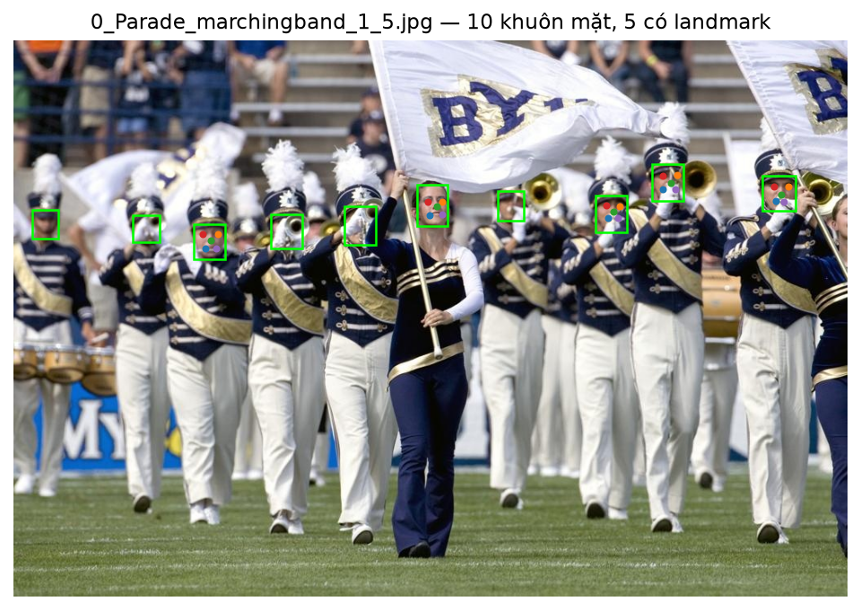
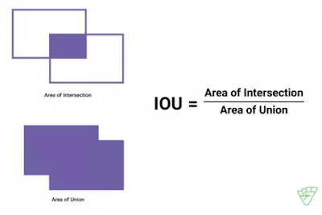

Chủ đề tự chọn và phân tích paper
Yêu cầu
Mô tả
Chọn một chủ đề thị giác máy tính (không trùng bài toán phân loại ảnh thuần của A1) và làm hai việc:
1. Xây dựng một pipeline chạy được (huấn luyện hoặc fine-tune + đánh giá).
2. Phân tích một paper liên quan (phương pháp, thí nghiệm, hạn chế) và nối với phần cài đặt của nhóm.
Hai phần nộp
- 1Hoàn thành · 01-11-2026
A2.1 — Chủ đề + paper + dữ liệu
Hạn nộp · 02/11/2026, 23:59 GMT+7 · W9
Khóa chủ đề; citation paper; mô tả tập dữ liệu và metric; kế hoạch pipeline. Chưa cần kết quả cuối.
- 2
A2.2 — Cài đặt + bài viết paper
Hạn nộp · 16/11/2026, 23:59 GMT+7 · W11
Pipeline chạy được, so sánh ít nhất 2 biến thể, phân tích paper đầy đủ, có số liệu và thảo luận.
Yêu cầu kỹ thuật
Triển khai ít nhất một pipeline chạy được và so sánh ít nhất hai phương pháp hoặc hai biến thể (kiến trúc, backbone, pretrained vs. không, loss, …). Gợi ý theo chủ đề:
- i
Phân đoạn
FCN, U-Net, DeepLab, PSPNet, SegFormer, Mask R-CNN; backbone ResNet vs. ViT. Metric: mIoU, Dice.
- ii
Phát hiện
YOLO vs. Faster R-CNN / DETR; CNN vs. Transformer. Metric: mAP@0.5 (và mAP@0.5:0.95 nếu được); có thể thêm FPS.
- iii
Định danh
ArcFace / CosFace / ReID; so sánh loss hoặc backbone. Metric: accuracy, Recall@k, mAP.
- iv
Tạo sinh
GAN vs. VAE vs. Diffusion (hoặc hai biến thể của một họ). Metric: FID / IS nếu chạy được.
Phân tích paper (bắt buộc)
Chọn một paper liên quan trực tiếp (ưu tiên CVPR / ICCV / ECCV / NeurIPS / ICLR hoặc bài có ảnh hưởng). Báo cáo cần:
- 1
Phương pháp: ý tưởng, kiến trúc, loss, giả thiết.
- 2
Thí nghiệm của paper: tập dữ liệu, metric, kết luận.
- 3
Hạn chế: dữ liệu, tính toán, failure case, giả thiết không đúng trên tập của nhóm.
- 4
Đối chiếu: nhóm tái hiện được gì, khác gì, học được gì cho pipeline.
Kết quả
A2.1 — Chủ đề + paper + dữ liệu
Chủ đề
Ở assignment A2 này, chủ đề được lựa chọn để thực hiện thuộc nhóm "Phát hiện đối tượng", cụ thể là "Phát hiện khuôn mặt" với đầu vào là một ảnh bất kì.
flowchart LR
A["Input X"] --> B@{ shape: hex, label: "Model" } --> C["y"]
Trong đó:
- X: là một ảnh đầu vào, có dạng [C, H, W]
- Model: là phần được thực hiện ở phần này.
- y: là output dùng để xác định khuôn mặt có trong ảnh, với dạng là array của [l, cx, cy, w, h, x1, y1, x2, y2, x3, y3, x4, y4, x5, y5]
- l: label với 0 là face
- cx, cy: tâm (center) của boundary box
- w, h: là kích thước của bbox
- x_n, y_n: lần lượt là vị trí của các landmarks
Citation paper
- Paper: YOLO5Face: Why Reinventing a Face Detector
- Authors: Delong Qi, Weijun Tan, Qi Yao, Jingfeng Liu
- Year: 2021
- Venue: Published in Computer Vision – ECCV 2022 Workshops (Springer, pages 228–244)
- Affiliations: Shenzhen Deepcam Information Technologies (China) and LinkSprite Technologies (USA)
- Cite as: arXiv:2105.12931 [cs.CV]
- DOI: 10.48550/arXiv.2105.12931
- Source Code / Repository: Available on GitHub - deepcam-cn/yolov5-face
Dataset
- Tập dữ liệu được sử dụng cho A2 này là WIDERFace: Một bộ dữ liệu chuẩn về khả năng nhận diện khuôn mặt quy mô lớn được tạo ra bởi Phòng thí nghiệm Đa phương tiện thuộc Đại học Trung văn Hồng Kông (CUHK).
- Tổng cộng có: 32,203 ảnh.
- Số khuôn mặt được đánh nhãn có boundary box: 393,703
- Được tổ chức thành 61 danh mục sự kiện khác nhau (như thể thao, giao thông, hội họp và biểu tình) với sự đa dạng cao về quy mô, tư thế, biểu cảm, ánh sáng và sự che khuất.
- Data Splits:
| Tập | Số ảnh | Tỷ lệ |
|---|---|---|
| Training | 12,880 | 40% |
| Val | 3,226 | 10% |
| Test | 16,097 | 50% |
Sau khi chạy train2yolo và val2yolo để chuyển định dạng thành YOLO cho quá trình training model với label annotation, mỗi ảnh train và val sẽ có một file *.txt riêng cùng tên với ảnh. Mỗi khuôn mặt được đánh nhãn là một dòng với nội dung như sau:
0 cx cy w h x1 y1 x2 y2 x3 y3 x4 y4 x5 y5Tương tự với cách chú giải ở trên:
- 0: là class face
- cx cy w h: là boundary box, chuẩn hóa về 0-1 theo kích thước ảnh.
- các x_n, y_n là vị trí các landmark, cũng được chuẩn hóa 0-1. Điểm nào không có nhãn thì được ghi
-1.
Việc chuẩn hóa về 0-1 giúp ích cho việc không cần phải tính lại vị trí của các điểm trên khi thay đổi kích thước ảnh.
Ví dụ:
Ảnh có tên 0_Parade_marchingband_1_5.jpg là:
Với annotation tương ứng có tên 0_Parade_marchingband_1_5.txt là:
0 0.50146484375 0.2964860907759883 0.0361328125 0.0746705710102489 0.4964423828125 0.2896354319180088 0.51370703125 0.2896354319180088 0.50680078125 0.2981068814055637 0.4986396484375 0.31363689604685213 0.51370703125 0.31269546120058567
0 0.4150390625 0.3323572474377745 0.037109375 0.07027818448023426 -0.0009765625 -0.0014641288433382138 -0.0009765625 -0.0014641288433382138 -0.0009765625 -0.0014641288433382138 -0.0009765625 -0.0014641288433382138 -0.0009765625 -0.0014641288433382138
0 0.3271484375 0.34260614934114203 0.037109375 0.06149341142020498 -0.0009765625 -0.0014641288433382138 -0.0009765625 -0.0014641288433382138 -0.0009765625 -0.0014641288433382138 -0.0009765625 -0.0014641288433382138 -0.0009765625 -0.0014641288433382138
0 0.234375 0.3616398243045388 0.037109375 0.06149341142020498 0.22659765625 0.3484099560761347 0.244384765625 0.3484099560761347 0.236275390625 0.35899853587115665 0.229212890625 0.3735095168374817 0.2425537109375 0.37390190336749635
0 0.0380859375 0.3301610541727672 0.03125 0.05124450951683748 -0.0009765625 -0.0014641288433382138 -0.0009765625 -0.0014641288433382138 -0.0009765625 -0.0014641288433382138 -0.0009765625 -0.0014641288433382138 -0.0009765625 -0.0014641288433382138
0 0.91748046875 0.2745241581259151 0.0400390625 0.0629575402635432 0.91109765625 0.2620395314787701 0.9289375 0.26244509516837483 0.920017578125 0.27662957540263544 0.912990234375 0.28878623718887264 0.92353125 0.2891918008784773
0 0.7841796875 0.2554904831625183 0.037109375 0.06588579795021962 0.7782509765625 0.2438814055636896 0.7955498046875 0.24220937042459736 0.7877373046875 0.2564319180087848 0.7782509765625 0.2681449487554905 0.7935966796875 0.267307467057101
0 0.71630859375 0.31112737920937045 0.0380859375 0.06588579795021962 0.71044921875 0.29617276720351393 0.726353515625 0.2974275256222548 0.7190986328125 0.308303074670571 0.712681640625 0.31876134699853587 0.72412109375 0.3191800878477306
0 0.595703125 0.2972181551976574 0.03125 0.0527086383601757 -0.0009765625 -0.0014641288433382138 -0.0009765625 -0.0014641288433382138 -0.0009765625 -0.0014641288433382138 -0.0009765625 -0.0014641288433382138 -0.0009765625 -0.0014641288433382138
0 0.15869140625 0.3389458272327965 0.0322265625 0.048316251830161056 -0.0009765625 -0.0014641288433382138 -0.0009765625 -0.0014641288433382138 -0.0009765625 -0.0014641288433382138 -0.0009765625 -0.0014641288433382138 -0.0009765625 -0.0014641288433382138Thì khi mask boundary box lên ảnh ta được:

Metric
IoU
Một boundary box (bbox) dự đoán cần được ghép với bbox của ground-truth, tức là so với các annotation, bằng Intersection over Union (IoU):

Giá trị IoU càng cao tức là hai box càng khớp nhau. Với dataset WIDERFace, ngưỡng đánh giá là 0.5 (theo protocol PASCAL VOC).
Sau khi ghép dự đoán với ground truth, ta có:
- TP: phát hiện đúng một khuôn mặt.
- FP: dự đoán không khớp mặt hợp lệ, hoặc phát hiện trùng một mặt đã được ghép.
- FN: mặt hợp lệ bị bỏ sót.
Precision và Recall
- Precision: có thể suy luận ra độ chính xác của model khi dự đoán đúng trong các mặt được model tìm thấy. Dùng để kiểm tra phát hiện nhầm.
- Recall: trả lời cho câu hỏi "trong các mặt thực sự có, model tìm được bao nhiêu?". Dùng để kiểm tra bỏ sót.
Average Precision (AP)
Từ precision và recall đã tìm được ở phía trên ta có thể vẽ được đường cong precsion theo recall (PR curve) cho mỗi class riêng biệt. Nó chỉ ra sự đánh đổi giữa precision và recall đối với nhiều giá trị confidence score khác nhau. AP chính là phần diện tích phía dưới đường cong PR curve đã nói bên trên. Nếu phần diện tích này lớn đồng nghĩa với việc precision và recall sẽ cao đồng nghĩa model có chất lượng tốt.
Cho biết khả năng phát hiện trên từng mức khó, xét nhiều confidence threshold, được xem là metric chính.
AP trên ba mức Easy / Medium / Hard.
Kế hoạch pipeline
flowchart TD
subgraph model["Model Detector"]
direction LR
m1["backbone"] --> m2["neck"] --> m3["head"]
end
B["Tiền xử lý"] --> A["Load ảnh"]
A --> model
model --> D["Predict"]
D --> E["So với ground-truth"]
E --> F["Tính loss và cập nhật trọng số"]
F --> G["Đánh giá"]
G --> H["Suy luận trên ảnh mới"]
Tiền xử lý
- Các ảnh có kích thước khác nhau cần được đưa về khích thước đầu vào phù hợp.
- Có thể thêm các augmentation phù hợp như lật ngang, thay đổi màu hoặc crop, cần áp dụng tương ứng lên annotation khi có biến đổi hình học.
Load ảnh
- Với các ảnh sau khi được xử lý, dùng DataLoader để gom nhiều mẫu thành một batch.
Model detector
Bao gồm 3 phần chính:
- Backbone: trích xuất đặc trưng từ ảnh.
- Neck: kết hợp đặc trưng ở nhiều độ phân giải.
- Head: dự đoán vị trí mặt, confidence và landmarks.
Model được khởi tạo ngẫu nhiên.
Ghép dự đoán với ground-truth và tính loss
Trong quá trình dự đoán, model sẽ tạo ra nhiều ứng viên. Lúc này cần xác định dự đoán nào chịu trách nhiệm học mỗi khuôn mặt.
Loss của YOLO5Face bao gồm các thành phần:
- Bounding box: vị trí và kích thước khuôn mặt.
- Objectness: dự đoán có đối tượng hay không.
- Classification: lớp đối tượng.
- Landmarks: sai lệch vị trí các điểm hợp lệ.
Đánh giá
Sau mỗi epoch:
- Chuyển model qua chế độ evaluation.
- Chạy dự đoán trên validation.
- Lọc dự đoán trùng, so với ground-truth.
- Tính metric, ghi log, lưu checkpoint.